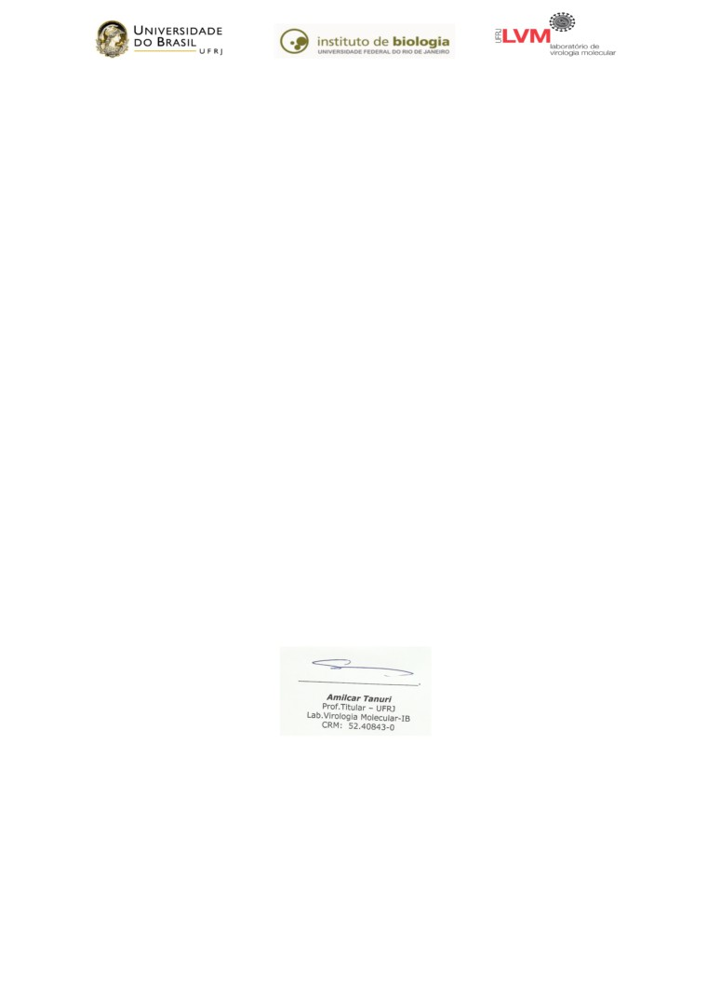

Laudo Técnico de Diagnóstico Molecular para o Vírus SARS-CoV2 (COVID-19)
NOME DO PACIENTE: [Nome da Pessoa]
DATA: [Data de geração do relatório]
DATA DE RECEBIMENTO DA AMOSTRA:[Data que a amostra foi recebida]
IDENTIFICAÇÃO DO PACIENTE: [Id unico paciente]
MATERIAL COLETADO: swab/sangue
METODOLOGIA:
Exame de diagnóstico molecular pelo Método de detecção de RT-PCR em tempo real, com
sondas de detecção para SARS-CoV2 (COVID-19).
RESULTADO:
[DETECTÁVEL - Amplificação do ácido nucléico observada para 2 alvos do vírus abaixo do Ct 37.]?
CONCLUSÃO:
A amostra coletada de (x) SW, do paciente na presente data, mostrou-se [Resultado] para o ácido
nucléico do SARS-CoV2.
OBSERVAÇÕES:
(1) No caso de exame POSITIVO o paciente deverá manter-se afastado das atividades laborais
por período mínimo de 14 dias após início dos sintomas.
Recomendamos que retorne no 14° dia para coleta de nova amostra para controle de cura.
(2) No caso do SARS-CoV2 NÃO estar detectável na amostra, deve-se levar em consideração o
tipo de material coletado e o tempo transcorrido entre o período de sintomas observados e a
data da coleta da amostra para realização do exame.
(3) Amostra com detecção indeterminada para o ácido nucléico do SARS-CoV2 sugerimos a
realização de nova coleta/exame.
Avenida Carlos Chagas Filho, 375, CCS, Bloco A, sala 121, Cidade Universitária,
Ilha do Fundão, Rio de Janeiro/RJ - CEP 21941-902
Telefone: 55+21+3938-6384